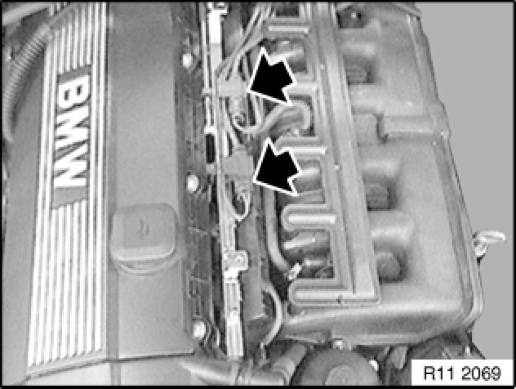
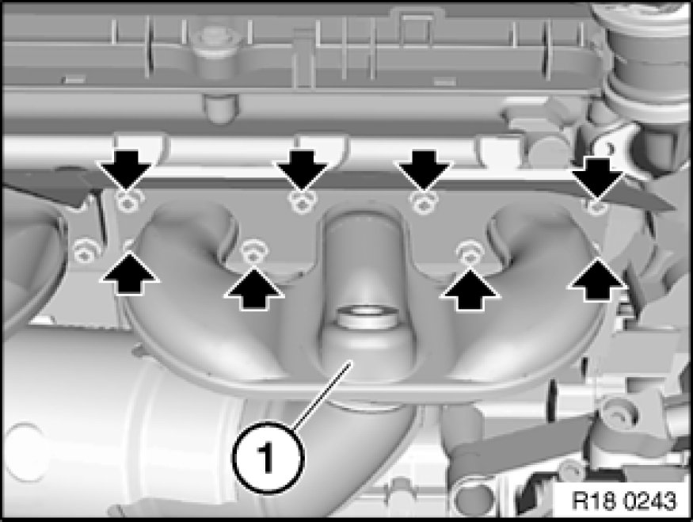

Removing and Installing/Replacing Front Exhaust Manifold (M54/N52)
18 40 050 - Removing and installing/replacing front exhaust manifold (M54/N52)

Necessary preliminary tasks:
- Secure engine in installation position
- Remove reinforcement plate Service and Repair
- Remove complete exhaust system Service and Repair
- Detach grounding cable from body.
- Remove right engine support arm with engine mount
- M54: Remove air pump.

Note:
The oxygen sensors are in danger of being damaged when the exhaust manifolds are removed and installed.
Remove front control sensor.

M54: Remove cover from injection valves.
Note:
Do not mix up monitor sensors for cylinders 1 to 3 and 4 to 6 at plug connection to wiring harness.
Mark plug connections.
Unclip cable from holder. Disconnect plug connection. Unclip cable on rear side of engine from cable guide.
Remove monitor sensor from cylinders 1 to 3.

Unscrew nuts.
Remove exhaust manifold (1).
Installation:
Clean sealing faces, replace gaskets.
Replace nuts.
Tightening torque 11 62 1AZ [1][2]11 62 Exhaust Manifold.